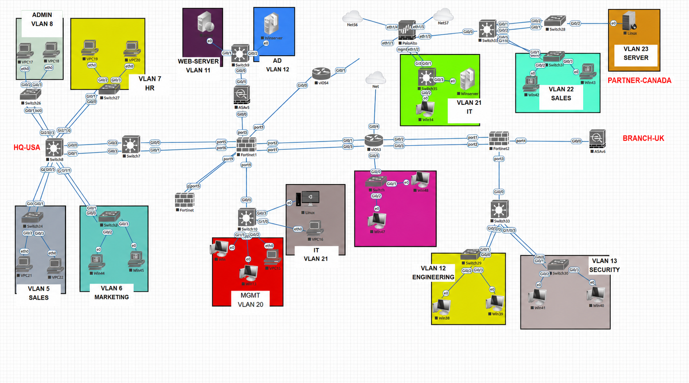

Network · Security
Documented
Enterprise Network Security Lab
An EVE-NG enterprise lab where I configured and troubleshot a provided multi-site topology. This case study follows the verified HQ path: departmental VLANs across Cisco switching, FortiGate gateway and DHCP services, and client connectivity checks.
- EVE-NG
- Cisco IOS
- FortiGate
- Palo Alto
- Role
- Implementation & troubleshooting
- Type
- Multi-vendor EVE-NG lab
- Focus
- Segmentation & validation

Overview
Problem & motivation
A drawn enterprise topology is only a starting point. The practical goal was to turn its HQ access layer into a segmented network with consistent switching, gateway, addressing, and validation behavior.
My role
I implemented and troubleshot the provided topology: assigning Cisco access ports and trunks, configuring FortiGate VLAN interfaces and DHCP, and tracing faults across both sides of the link.
What was built
The verified HQ phase separates Sales, Marketing, HR, and Admin into VLANs 5–8. Each department has a FortiGate gateway and DHCP scope, with two clients per VLAN used for local gateway validation.
- Separate four HQ departments at Layer 2 with dedicated access VLANs.
- Carry the departmental VLANs over an 802.1Q path between Cisco switching and FortiGate.
- Issue the expected client addressing and verify each client against its local gateway.
Inside the Build
- Access
- Cisco client-facing ports were assigned to the intended departmental VLAN instead of relying on the default VLAN.
- Trunking
- An 802.1Q path carries VLANs 5–8 from the switching layer to matching FortiGate subinterfaces.
- Services
- FortiGate provides the local gateway and DHCP scope for each department in the verified HQ phase.
- Validation
- Two clients in every department received the expected scope, mask, and gateway, then reached their local gateway.
Client request
Service & proof
Challenges & Takeaways
Technical challenge
A suspended EtherChannel prevented a reliable return path. A separate client also learned on VLAN 1, so its DHCP traffic never reached the intended departmental scope.
How it was addressed
I compared switch port-channel, trunk, MAC, and FortiGate interface behavior, simplified the uplink to one working trunk, corrected the client access VLAN, and refreshed its network state.
Specific takeaway
Firewall troubleshooting still begins at Layer 2. Verifying port membership, tags, MAC learning, and both traffic directions prevents a policy change from masking a switching fault.
Future improvement
Add sanitized current-state captures for policy enforcement, routing, HA, SD-WAN, Palo Alto, and ASA phases so every broader enterprise claim has matching operational evidence.
VLAN 5Sales · 2 clientsExpected DHCP scope and local gateway reachedVLAN 6Marketing · 2 clientsExpected DHCP scope and local gateway reachedVLAN 7HR · 2 clientsExpected DHCP scope and local gateway reachedVLAN 8Admin · 2 clientsExpected DHCP scope and local gateway reachedThis visual summarizes the recorded lab validation without recreating CLI output. A sanitized console capture can be added later as direct visual evidence.